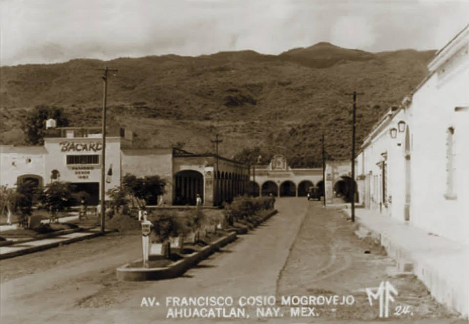
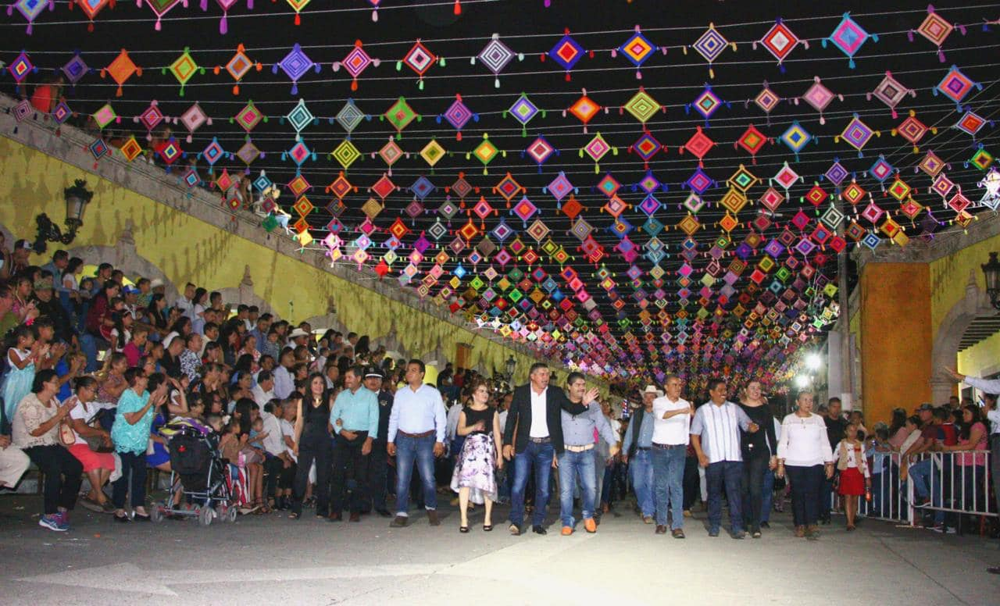

UBICACIÓN: Ahuacatlán se encuentra en el sur del estado de Nayarit, México. Este municipio limita con Santa María del Oro al norte, San Pedro Lagunillas al oeste, Jala e Ixtlán del Río al este, y Amatlán de Cañas al sur y sureste. Su cabecera municipal, también llamada Ahuacatlán, está situada a una altitud de aproximadamente 999 metros sobre el nivel del mar
HISTORIA: Ahuacatlán fue fundado por la tribu Nahoa, en su peregrinar hacia el centro del Anáhuac. Miembros de esta tribu que ya no deseaban continuar la marcha se quedaron bajo el mando de Huaxicar.Este lugar también fue puerta de entrada y paraje del conquistador Nuño Beltrán de Guzmán en 1529. Antes que llegaran los españoles a estos lugares y que repartieran la tierra entre sus gentes, Ahuacatlán ya era un importante lugar de paso y punto de intercambio; de las distintas comunidades étnicas, que en esta región habitaban. El aumento de la población pronto se encargaría de motivar a los padres de la Orden de San Francisco para que en el año de 1550, se fundara un convento; en él se procuraría, además de evangelizar, promover algunos oficios y avanzar en el terreno educativo.Hasta mediados del siglo XIX, Ahuacatlán permaneció como uno de los más importantes núcleos de población en el sur de Nayarit. Sus habitantes por muchos años se dedicaron al comercio, la arriería y la agricultura. Lo anterior no era gratuito, ya que el gran Camino Real, que se encargaba de unir a Guadalajara con el puerto de San Blas, cruzaba por el corazón de la villa.
FIESTAS: Feria de la Nuez (octubre), fiesta patronal de San Francisco.
PRODUCCIÓN: Nuez, aguacate, caña de azúcar y maíz.